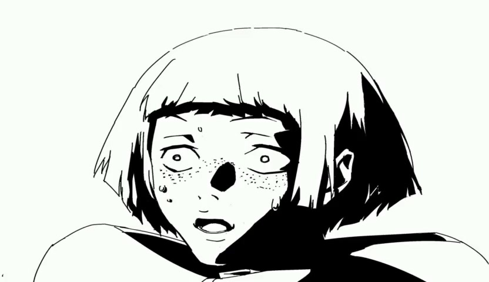
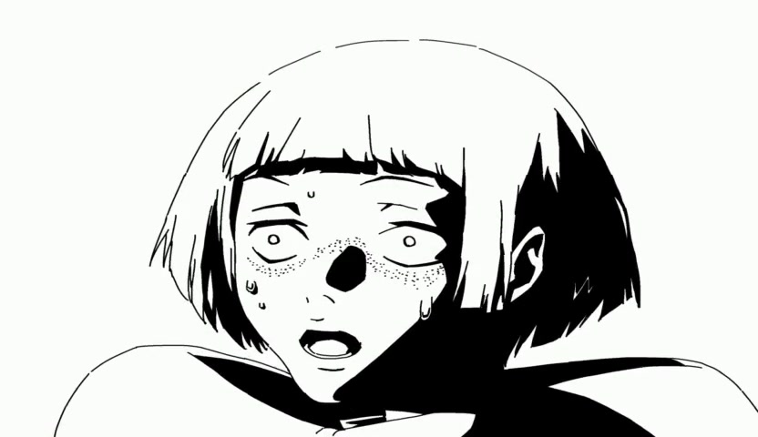

Predict the trajectory
Estimate endpoint correspondences and learn the paths that connect them through time.
Learning Motion Correspondence
for Generative Line-Art In-between
From a first sketch to a last sketch.
Discover what happens in between.


The space between two frames
Scroll to travel through the generated motion.
Go forward, rewind, or inspect a single frame.
Two input sketches. A continuous sequence of generated frames.
The motion collection
Expressions, gestures, shared scenes, and shifts in perspective. Explore the full collection of generated results.
Click a case to inspect the inputs, generated result, and ground truth.
Behind the in-between
Learning motion correspondence connects the two endpoint sketches and guides the generation of intermediate line art.
Estimate endpoint correspondences and learn the paths that connect them through time.
Carry features from both endpoint sketches along predicted trajectories, with a straight-through estimator.
Use trajectory-guided attention in the diffusion transformer to synthesize the intermediate frames.
Architecture overview from the project materials.
Side by side
Compare methods at the same normalized point in time. Scrub together, slow down, and inspect the line structures.
Playback uses normalized time because source clips have different lengths. Dense and sparse denote the supplied result variants.
Take it apart
Explore the ablations from the presentation. Switch a component and compare it with the full model.
SketchIn-between